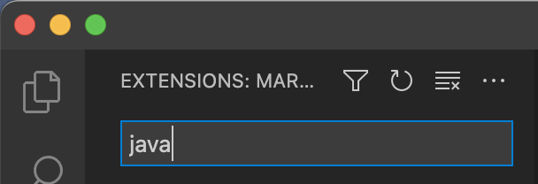
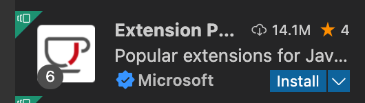
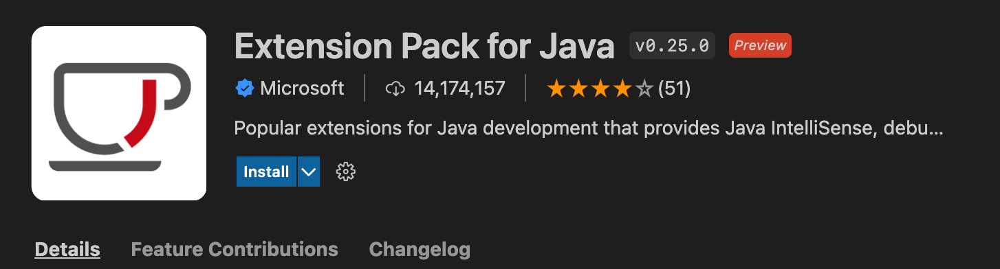
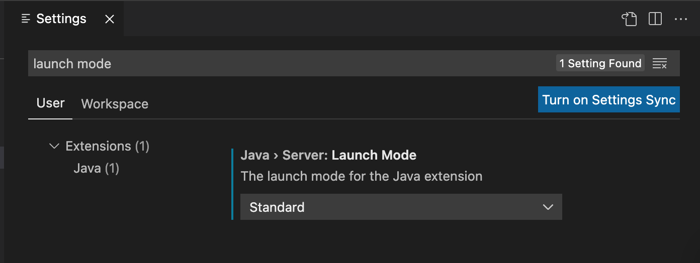

Click the Extensions icon in the sidebar on the left. It is the one that has three connected squares, plus a tilted fourth square floating in the upper right:
Inside the extension list that appears, type Java in the “Search Extensions” box:
One of the results, probably the very first one, will be the Extension Pack for Java from Microsoft. The name may be truncated, as in the picture below:
...but if it is, you can click the extension to see the full details and make sure you have the right one:
⚠️ CAUTION Be sure you getting Java, not JavaScript! The two are very different languages that just happen to have similar names.
Historical details on the Java / JavaScript naming similarity
(The latter was originally called “LiveScript,” but they changed the name to “JavaScript” at the last second because they heard that something big named “Java” was coming out soon, and they wanted to get in on the action. See Wikipedia on the history of JavaScript for more details )
Both languages are useful and widely used, and you can install both in VS Code if you want to. But Java is the one you will need for this class.
You might not see exactly the same commands as the one in the screenshot. That is OK! Just make sure there is a large number of commands that start with “Java:”, whatever the commands are.
- Try quitting and reopening Visual Studio Code again and repeat step 6.
- If that doesn’t work, go back to step 4 and try it again.
- If that still doesn’t work, ask the instructor or a preceptor for help.
Now we want to add some settings to configure VS Code and the various extensions you just installed. Here's the easiest way to get them all at once.
Open the command palette again and search for "user settings json". Select Preferences: Open User Settings (JSON). That will open a new window. If VS Code says the file doesn't exist, create it; otherwise, delete everything there, and replace it with the following:
{
"files.autoSave": "onFocusChange",
"java.server.launchMode": "Standard",
"java.import.generatesMetadataFilesAtProjectRoot": true,
"github.copilot.enable": {
"*": false,
"plaintext": false,
"markdown": false,
"scminput": false
},
"extensions.autoUpdate": false,
"chat.disableAIFeatures": true,
"vsintellicode.java.completionsEnabled": false
}
Save the file and restart Visual Studio Code.
Optional but nice to do: verify that the settings are applied. Open the VS Code settings by pressing ⌘-comma (Mac) or ctrl-comma (Windows). If the shortcut isn't working, then navigate to Code menu → Preferences → Settings (Mac) / File menu → Preferences → Settings (Windows).
Search for "launch mode". Verify that you see "Java > Server: Launch Mode" set to Standard: 
If you see that set to "Hybrid", go through the step above and make sure your user settings have been correctly saved!.
⚠️ If you are stuck here and can't get the settings correct: ask your instructor or a preceptor for help. Getting those settings correct now will save you much confusion, frustration, and sadness later.